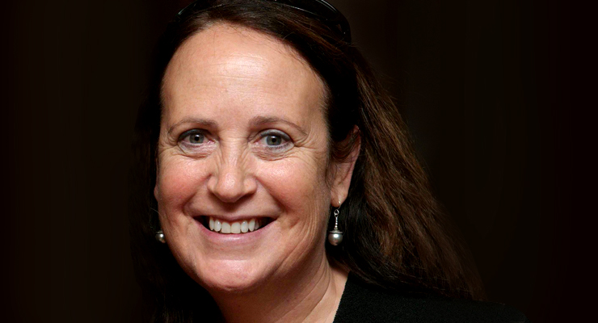

Interview
Interviewee
Felicia Marcus
Felicia Marcus is the chair of the California State Water Resources Control Board, and has been since 2013. She has also worked as the Regional Administrator of the U.S EPA Region IX in the Clinton Administration. In adition, she has also worked for numberous non profits and became especially known for her work with native american land preservation.
Summary
The current Chair of the State Water Reserve Board, Felicia Marcus, allowed us the opportunity to interview her on the issues relating to water pollution and climate change. Ms. Marcus has been working in for a number of years, even having worked in the Clinton administration as the Regional Administrator of the U.S EPA Region IX. She was appointed by Jerry Brown to head the State Water Reserve Board in 2013. The interview with Felicia Marcus was an informative and enlightening experience. This was not solely because of the vast amount of experience Ms. Marcus had, but also her creative solutions to many issues regarding water pollution that we had never seen as major. For instance, Ms. Marcus mentioned that she felt most issues can be dealt with on the personal level, with water usage issues and one of the biggest pollution creators being fertilizers we use in our gardens. Ms. Marcus valued education, not regulation as one of the best solutions to these issues. Ms. Marcus emphasized creating a culture of being conscious of water and cited the education efforts for exiting the drought as one of those examples, and valued that over being, as she put it, “eco cops”.